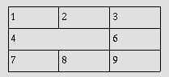

11 Tables
11.1 Introduction to tables
The HTML table model allows authors to arrange data -- text,
preformatted text, images, links, forms, form fields, other tables,
etc. -- into rows and columns of cells.
Each table may have an associated caption (see the CAPTION element) that provides a short
description of the table's purpose. A longer description may also be
provided (via the summary attribute) for
the benefit of people using speech or Braille-based user agents.
Table rows may be grouped into a head,
foot, and body sections, (via the THEAD,
TFOOT and TBODY
elements, respectively). Row groups convey additional structural
information and may be rendered by user agents in ways that emphasize
this structure. User agents may exploit the head/body/foot division to
support scrolling of body sections independently of the head and foot
sections. When long tables are printed, the head and foot information
may be repeated on each page that contains table data.
Authors may also group columns to provide
additional structural information that may be exploited by user
agents. Furthermore, authors may declare column properties at the
start of a table definition (via the COLGROUP and COL
elements) in a way that enables user agents to render the table
incrementally rather than having to wait for all the table data to arrive
before rendering.
Table cells may either contain "header"
information (see the TH element) or "data"
(see the TD element). Cells may span
multiple rows and columns. The HTML 4.0 table model allows authors to
label each cell so that non-visual
user agents may more easily communicate heading information about
the cell to the user. Not only do these mechanisms greatly assist
users with visual disabilities, they make it possible for multi-modal
wireless browsers with limited display capabilities (e.g., Web-enabled
pagers and phones) to handle tables.
Tables should not be used purely as a means to layout document
content as this may present problems when rendering to non-visual
media. Additionally, when used with graphics, these tables may force
users to scroll horizontally to view a table designed on a system with
a larger display. To minimize these problems, authors should use style sheets to control layout
rather than tables.
Here's a simple table that illustrates some of the features
of the HTML table model. The following table
definition:
<TABLE border="1"
summary="This table gives some statistics about fruit
flies: average height and weight, and percentage
with red eyes (for both males and females).">
<CAPTION><EM>A test table with merged cells</EM></CAPTION>
<TR><TH rowspan="2"><TH colspan="2">Average
<TH rowspan="2">Red<BR>eyes
<TR><TH>height<TH>weight
<TR><TH>Males<TD>1.9<TD>0.003<TD>40%
<TR><TH>Females<TD>1.7<TD>0.002<TD>43%
</TABLE>
might be rendered something like this on a tty device:
A test table with merged cells
/-----------------------------------------\
| | Average | Red |
| |-------------------| eyes |
| | height | weight | |
|-----------------------------------------|
| Males | 1.9 | 0.003 | 40% |
|-----------------------------------------|
| Females | 1.7 | 0.002 | 43% |
\-----------------------------------------/
or like this by a graphical user agent:

11.2 Elements for constructing tables
Start tag: required, End tag: required
Attribute definitions
- summary = text
[CS]
- This attribute provides a summary of the table's
purpose and structure for user agents rendering to non-visual media
such as speech and Braille.
- align
= left|center|right
[CI]
- Deprecated.
This attribute specifies the position of the table with respect to the
document. Permitted values:
- left: The table is to the left of the document.
- center: The table is to the center of the
document.
- right: The table is to the right of the document.
- width
= length
[CN]
- This attribute specifies the desired width of the entire table and
is intended for visual user agents. When the value is a percentage
value, the value is relative to the user agent's available horizontal
space. In the absence of any width specification, table width is
determined by the user agent.
Attributes defined elsewhere
- id, class
(document-wide
identifiers)
- lang (language information),
dir (text direction)
- title (element title)
- style (inline style information
)
- onclick,
ondblclick,
onmousedown,
onmouseup,
onmouseover,
onmousemove,
onmouseout,
onkeypress,
onkeydown,
onkeyup
(intrinsic events)
- bgcolor (background color)
- frame,
rules,
border (borders and rules)
- cellspacing,
cellpadding (cell margins)
The TABLE element contains all other
elements that specify caption, rows, content, and formatting.
The following informative list describes what operations user agents
may carry out when rendering a table:
- Make the table summary
available to the user. Authors should provide a summary of a table's
content and structure so that people using non-visual user agents may
better understand it.
- Render the caption, if one is defined.
- Render the table header, if one is specified.
Render the table footer, if one is specified. User agents
must know where to render the header and footer. For instance,
if the output medium is paged, user agents may put the header
at the top of each page and the footer at the bottom. Similarly,
if the user agent provides a mechanism to scroll the rows,
the header may appear at the
top of the scrolled area and the footer at the bottom.
- Calculate the number of columns in the
table. Note that the number of rows in a
table is equal to the number of TR
elements contained by the TABLE element.
- Group the columns according to any column
group specifications.
- Render the cells, row by row and grouped in appropriate columns,
between the header and footer. Visual user agents should format the table according to HTML
attributes and style sheet specification.
The HTML table model has been designed so that, with author
assistance, user agents may render tables
incrementally (i.e., as table rows arrive) rather than
having to wait for all the data before beginning to render.
In order for a user agent to format a table in one pass, authors
must tell the user agent:
More precisely, a user agent may render a table in a single pass
when the column widths are specified using a combination of COLGROUP and COL
elements. If any of the columns are specified in relative or
percentage terms (see the section on
calculating the width of columns), authors must also specify the
width of the table itself.
The directionality of a table
is either the inherited directionality (the default is left-to-right)
or that specified by the dir attribute for
the TABLE element.
For a left-to-right table, column zero is on the left side and row
zero is at the top. For a right-to-left table, column zero is on the
right side and row zero is at the top.
When a user agent allots extra cells to a row (see the section on
calculating the number of columns in a
table), extra row cells are added to the right of the table for
left-to-right tables and to the left side for right-to-left tables.
Note that TABLE is the only element on
which dir reverses the visual order of the
columns; a single table row (TR) or a group
of columns (COLGROUP) cannot be
independently reversed.
When set for the TABLE element, the
dir attribute also affects the direction of
text within table cells (since the dir
attribute is inherited by block-level elements).
To specify a right-to-left table, set the dir attribute as follows:
<TABLE dir="RTL">
...the rest of the table...
</TABLE>
The direction of text in individual cells can be changed by setting
the dir attribute in an element that
defines the cell. Please consult the section on bidirectional text for more
information on text direction issues.
Start tag: required, End tag: required
Attribute definitions
- align
= top|bottom|left|right
[CI]
- Deprecated.
For visual user agents, this attribute specifies the position of the
caption with respect to the table. Possible values:
- top: The caption is at the top of the table. This
is the default value.
- bottom: The caption is at the bottom of the table.
- left: The caption is at the left of the table.
- right: The caption is at the right of the table.
Attributes defined elsewhere
- id, class
(document-wide
identifiers)
- lang (language information),
dir (text direction)
- title (element title)
- style (inline style information
)
- onclick,
ondblclick,
onmousedown,
onmouseup,
onmouseover,
onmousemove,
onmouseout,
onkeypress,
onkeydown,
onkeyup
(intrinsic events
)
When present, the CAPTION element's text
should describe
the nature of the table. The CAPTION
element is only permitted immediately after the TABLE start tag. A TABLE element may only contain one CAPTION element.
Visual user agents allow sighted people to quickly grasp the
structure of the table from the headings as well as the caption. A
consequence of this is that captions will often be inadequate as a
summary of the purpose and structure of the table from the
perspective of people relying on non-visual user agents.
Authors should therefore take
care to provide additional information summarizing the purpose
and structure of the table using the summary attribute of the TABLE element. This is especially important for
tables without captions. Examples below illustrate the use of the
summary attribute.
Visual user agents should avoid
clipping any part of the table including the caption, unless a
means is provided to access all parts, e.g., by horizontal or vertical
scrolling. We recommend that the caption text be wrapped to the same
width as the table. (See also the section on recommended layout
algorithms.)
<!ELEMENT THEAD - O (TR)+ -- table header -->
<!ELEMENT TFOOT - O (TR)+ -- table footer -->
Start tag: required, End tag: optional
<!ELEMENT TBODY O O (TR)+ -- table body -->
Start tag: optional, End tag: optional
Attributes defined elsewhere
- id, class
(document-wide
identifiers)
- lang (language information),
dir (text direction)
- title (element title)
- style (inline style information
)
- onclick,
ondblclick,
onmousedown,
onmouseup,
onmouseover,
onmousemove,
onmouseout,
onkeypress,
onkeydown,
onkeyup
(intrinsic events
)
- align,
char,
charoff,
valign
(cell alignment)
Table rows may be grouped into a table head, table foot, and
one or more table body sections, using the THEAD, TFOOT and TBODY elements, respectively. This division
enables user agents to support scrolling of table bodies independently
of the table head and foot. When long tables are printed, the table
head and foot information may be repeated on each page that contains
table data.
The table head and table foot should contain information about the
table's columns. The table body should contain rows of table data.
When present, each THEAD, TFOOT, and TBODY
contains a row group. Each row group must contain at least
one row, defined by the TR element.
This example illustrates the order and structure of table heads,
feet, and bodies.
<TABLE>
<THEAD>
<TR> ...header information...
</THEAD>
<TFOOT>
<TR> ...footer information...
</TFOOT>
<TBODY>
<TR> ...first row of block one data...
<TR> ...second row of block one data...
</TBODY>
<TBODY>
<TR> ...first row of block two data...
<TR> ...second row of block two data...
<TR> ...third row of block two data...
</TBODY>
</TABLE>
TFOOT must appear before TBODY within a TABLE
definition so that user agents can render the foot before receiving
all of the (potentially numerous) rows of data. The following
summarizes which tags are required and which may be omitted:
- The TBODY start tag is always required
except when the table contains only one table body and no table head or foot
sections. The TBODY end tag may always be
safely omitted.
- The start tags for THEAD and TFOOT are required when the table head and foot
sections are present respectively, but the corresponding end tags may
always be safely omitted.
Conforming user agent parsers must obey these rules for reasons
of backward compatibility.
The table of the previous example could be shortened by removing
certain end tags, as in:
<TABLE>
<THEAD>
<TR> ...header information...
<TFOOT>
<TR> ...footer information...
<TBODY>
<TR> ...first row of block one data...
<TR> ...second row of block one data...
<TBODY>
<TR> ...first row of block two data...
<TR> ...second row of block two data...
<TR> ...third row of block two data...
</TABLE>
The THEAD, TFOOT, and TBODY
sections must contain the same number of columns.
Column groups allow authors to create structural divisions
within a table. Authors may highlight this structure through style
sheets or HTML attributes (e.g., the rules attribute for the TABLE element). For an example of the visual
presentation of column groups, please consult the sample table.
A table may either contain a single implicit column group (no COLGROUP element delimits the columns) or any
number of explicit column groups (each delimited by an instance of the
COLGROUP element).
The COL element allows authors to share
attributes among several columns without implying any structural
grouping. The "span" of the COL element
is the number of columns that will share the element's attributes.
Start tag: required, End tag: optional
Attribute definitions
- span
= number
[CN]
- This attribute, which must be an integer > 0, specifies the
number of columns in a column group. Values mean the following:
- In the absence of a span attribute,
each COLGROUP defines a column
group containing one column.
- If the span attribute is set to N >
0, the current COLGROUP
element defines a column group containing N columns.
User agents must ignore this attribute if the COLGROUP element contains one or more COL elements.
- width
= multi-length
[CN]
This attribute specifies a default width for each column in the
current column group. In addition to the standard pixel, percentage,
and relative values, this attribute allows the special form "0*" (zero
asterisk) which means that the width of the each column in the group
should be the minimum width necessary to hold the column's
contents. This implies that a column's entire contents must be known
before its width may be correctly computed. Authors should be aware
that specifying "0*" will prevent visual user agents from rendering a
table incrementally.
This attribute is overridden for any column in the column group
whose width is specified via a COL element.
Attributes defined elsewhere
- id, class
(document-wide
identifiers)
- lang (language information),
dir (text direction)
- title (element title)
- style (inline style information
)
- onclick,
ondblclick,
onmousedown,
onmouseup,
onmouseover,
onmousemove,
onmouseout,
onkeypress,
onkeydown,
onkeyup
(intrinsic events
)
- align,
char,
charoff,
valign
(cell alignment)
The COLGROUP element creates an explicit
column group. The number of columns in the column group may be
specified in two, mutually exclusive ways:
- The element's
span attribute (default
value 1) specifies the number of columns in the group.
- Each COL element in the COLGROUP represents one or more columns
in the group.
The advantage of using the span
attribute is that authors may group together information about column
widths. Thus, if a table contains forty columns, all of which
have a width of 20 pixels, it is easier to write:
<COLGROUP span="40" width="20">
</COLGROUP>
than:
<COLGROUP>
<COL width="20">
<COL width="20">
...a total of forty COL elements...
</COLGROUP>
When it is necessary to single out a column (e.g., for style
information, to specify width information, etc.) within a group,
authors must identify that column with a COL element. Thus, to apply special style
information to the last column of the previous table, we single it out
as follows:
<COLGROUP width="20">
<COL span="39">
<COL id="format-me-specially">
</COLGROUP>
The width attribute of the
COLGROUP element is inherited by all 40
columns. The first COL element refers to
the first 39 columns (doing nothing special to them) and the second
one assigns an id value to the fortieth
columns so that style sheets may refer to it.
The table in the following example contains two column groups.
The first column group contains 10 columns and the second contains
5 columns. The default width for each column in the first column
group is 50 pixels. The width of each column in the second column
group will be the minimum required for that column.
<TABLE>
<COLGROUP span="10" width="50">
<COLGROUP span="5" width="0*">
<THEAD>
<TR><TD> ...
</TABLE>
The COL
element
Start tag: required, End tag: forbidden
Attribute definitions
- span
= number
[CN]
- This attribute, whose value must be an integer > 0, specifies
the number of columns "spanned" by the COL
element; the COL element shares its
attributes with all the columns it spans. The default value for this
attribute is 1 (i.e., the COL element
refers to a single column). If the span
attribute is set to N > 1, the current COL element shares its attributes with the
next N-1 columns.
- width
= multi-length
[CN]
- This attribute specifies a default width for each column
spanned by the current COL element.
It has the same meaning as the width attribute for the COLGROUP element and overrides it.
Attributes defined elsewhere
- id, class
(document-wide
identifiers)
- lang (language information),
dir (text direction)
- title (element title)
- style (inline style information
)
- onclick, ondblclick, onmousedown, onmouseup, onmouseover,
onmousemove, onmouseout, onkeypress,
onkeydown, onkeyup
(intrinsic events )
- align, char,
charoff, valign (cell alignment)
The COL element allows authors to
group together attribute specifications for table columns. The COL does not group columns
together structurally -- that is the role of the COLGROUP element.
COL elements are empty and serve only as a
support for attributes. They may appear inside or outside an explicit
column group (i.e., COLGROUP element).
The width attribute for COL refers to the width of each column in the
element's span.
There are two ways to determine the number of columns in a table
(in order of precedence):
- If the TABLE element contains any COLGROUP or COL
elements, user agents should calculate the number of columns by
summing the following:
- For each COL element,
take the value of its span attribute
(default value 1).
- For each COLGROUP element containing
at least one COL element, ignore the span attribute for the COLGROUP element. For each COL element, perform the calculation of step 1.
- For each empty COLGROUP element,
take the value of its span attribute
(default value 1).
- Otherwise, if the TABLE element
contains no COLGROUP or COL elements, user agents should base the number
of columns on what is required by the rows. The number of columns is
equal to the number of columns required by the row with the most
columns, including cells that span multiple columns. For any row that
has fewer than this number of columns, the end of that row should be
padded with empty cells. The "end" of a row depends on the table directionality.
It is an error if a table contains COLGROUP or COL
elements and the two calculations do not result in the same number of
columns.
Once the user agent has calculated the number of columns in the
table, it may group them into column groups.
For example, for each of the following tables, the
two column calculation methods should result in three columns.
The first three tables may be rendered incrementally.
<TABLE>
<COLGROUP span="3"></COLGROUP>
<TR><TD> ...
...rows...
</TABLE>
<TABLE>
<COLGROUP>
<COL>
<COL span="2">
</COLGROUP>
<TR><TD> ...
...rows...
</TABLE>
<TABLE>
<COLGROUP>
<COL>
</COLGROUP>
<COLGROUP span="2">
<TR><TD> ...
...rows...
</TABLE>
<TABLE>
<TR>
<TD><TD><TD>
</TR>
</TABLE>
Authors may specify column widths in three ways:
- Fixed
- A fixed width specification is given in pixels (e.g., width="30"). A fixed-width specification
enables incremental rendering.
- Percentage
- A percentage specification (e.g., width="20%") is based on the percentage of the
horizontal space available to the table (between the current left and
right margins, including floats). Note that this space does not depend
on the table itself, and thus percentage specifications enable
incremental rendering.
- Proportional
- Proportional specifications (e.g.,
width="3*") refer to portions of the horizontal
space required by a table. If the table width
is given a fixed value via the width attribute
of the TABLE element, user agents
may render the table incrementally even with proportional columns.
However, if the table does not have a fixed width, user agents
must receive all table data before they can determine the horizontal
space required by the table. Only then may this space be allotted
to proportional columns.
If an author specifies no width information for a column,
a user agent may not be able to incrementally format the table
since it must wait for the entire column of data to arrive
in order to allot an appropriate width.
If column widths prove to be too narrow for the contents of a
particular table cell, user agents may choose to reflow the table.
The table in this example contains six columns. The first one does
not belong to an explicit column group. The next three belong to the
first explicit column group and the last two belong to the second
explicit column group. This table cannot be formatted incrementally
since it contains proportional column width specifications and
no value for the width attribute
for the TABLE element.
Once the (visual) user agent has received the table's data: the
available horizontal space will be alloted by the user agent as
follows: First the user agent will allot 30 pixels to columns one and
two. Then, the minimal space required for the third column will be
reserved. The remaining horizontal space will be divided into six
equal portions (since 2* + 1* + 3* = 6 portions). Column four (2*)
will receive two of these portions, column five (1*) will receive one,
and column six (3*) will receive three.
<TABLE>
<COLGROUP>
<COL width="30">
<COLGROUP>
<COL width="30">
<COL width="0*">
<COL width="2*">
<COLGROUP align="center">
<COL width="1*">
<COL width="3*" align="char" char=":">
<THEAD>
<TR><TD> ...
...rows...
</TABLE>
We have set the value of the align
attribute in the third column group to "center". All cells in
every column in this group will inherit this value, but may
override it. In fact, the final COL does
just that, by specifying that every cell in the column it governs
will be aligned along the ":" character.
In the following table, the column width specifications allow
the user agent to format the table incrementally:
<TABLE width="200">
<COLGROUP span="10" width="15">
<COLGROUP width="*">
<COL id="penultimate-column">
<COL id="last-column">
<THEAD>
<TR><TD> ...
...rows...
</TABLE>
The first ten columns will be 15 pixels wide each. The last
two columns will each receive half of the remaining 50 pixels.
Note that the COL elements
appear only so that an id value
may be specified for the last two columns.
Note. Although the width attribute on the TABLE element is not deprecated, authors are
encouraged to use style sheets to specify table widths.
Start tag: required, End tag: optional
Attributes defined elsewhere
- id, class
(document-wide
identifiers)
- lang (language information),
dir (text direction)
- title (element title)
- style (inline style information
)
- onclick, ondblclick, onmousedown, onmouseup, onmouseover, onmousemove, onmouseout, onkeypress, onkeydown,
onkeyup (intrinsic events )
- align,
char,
charoff,
valign
(cell alignment)
The TR elements acts as a container
for a row of table cells. The end tag may be omitted.
This sample table contains three rows, each begun by the TR element:
<TABLE summary="This table charts the number of cups
of coffee consumed by each senator, the type
of coffee (decaf or regular), and whether
taken with sugar.">
<CAPTION>Cups of coffee consumed by each senator</CAPTION>
<TR> ...A header row...
<TR> ...First row of data...
<TR> ...Second row of data...
...the rest of the table...
</TABLE>
<!ELEMENT (TH|TD) - O (%flow;)* -- table header cell, table data cell-->
<!-- Scope is simpler than axes attribute for common tables -->
<!ENTITY % Scope "(row|col|rowgroup|colgroup)">
<!-- TH is for headers, TD for data, but for cells acting as both use TD -->
<!ATTLIST (TH|TD) -- header or data cell --
%attrs; -- %coreattrs, %i18n, %events --
abbr %Text; #IMPLIED -- abbreviation for header cell --
axis CDATA #IMPLIED -- names groups of related headers--
headers IDREFS #IMPLIED -- list of id's for header cells --
scope %Scope; #IMPLIED -- scope covered by header cells --
rowspan NUMBER 1 -- number of rows spanned by cell --
colspan NUMBER 1 -- number of cols spanned by cell --
%cellhalign; -- horizontal alignment in cells --
%cellvalign; -- vertical alignment in cells --
>
Start tag: required, End tag: optional
Attribute definitions
- headers
= idrefs
[CS]
- This attribute specifies the list of header cells that provide
header information for the current data cell. The value of this
attribute is a space-separated list of cell names; those
cells must be named by setting their id
attribute. Authors generally use the headers
attribute to help non-visual user agents render header information
about data cells (e.g., header information is spoken
prior to the cell data),
but the attribute may also be used in conjunction with style sheets.
See also the scope attribute.
- scope =
scope-name [CI]
- This attribute specifies the set of data cells for which the current
header cell provides header information. This attribute may be used in
place of the headers attribute, particularly
for simple tables. When specified, this attribute must have one of the
following values:
- row: The current cell provides header
information for the rest of the row that contains it (see also
the section on table directionality).
- col: The current cell provides header
information for the rest of the column that contains it.
- rowgroup: The header cell provides header
information for the rest of the row group
that contains it.
- colgroup: The header cell provides header
information for the rest of the column group
that contains it.
- abbr = text
[CS]
- This attribute should be used to provide an abbreviated form of the
cell's content, and may be rendered by user agents when appropriate in
place of the cell's content. Abbreviated names should be short since
user agents may render them repeatedly. For instance, speech synthesizers
may render the abbreviated headers relating to a particular cell before
rendering that cell's content.
- axis = cdata
[CI]
- This attribute may be used to place a cell into conceptual
categories that can be considered to form axes in an n-dimensional
space. User agents may give users access to these categories (e.g.,
the user may query the user agent for all cells that belong to certain
categories, the user agent may present a table in the form of a table of
contents, etc.). Please consult the section on categorizing cells for more information.
The value of this attribute is a comma-separated list of category
names.
- rowspan
= number
[CN]
- This attribute specifies the number of rows spanned by the
current cell. The default value of this attribute is one ("1"). The
value zero ("0") means that the cell spans all rows from the
current row to the last row of the table.
- colspan
= number
[CN]
- This attribute specifies the number of columns spanned by the
current cell. The default value of this attribute is one ("1"). The
value zero ("0") means that the cell spans all columns from the
current column to the last column of the table.
- nowrap
[CI]
- Deprecated.
When present, this boolean attribute tells visual user agents to
disable automatic text wrapping for this cell. Style sheets should be used instead
of this attribute to achieve wrapping effects. Note.
if used carelessly, this attribute may result in excessively wide
cells.
- width = pixels
[CN]
- Deprecated.
This attribute supplies user agents with a recommended cell width.
- height = pixels
[CN]
- Deprecated.
This attribute supplies user agents with a recommended cell height.
Attributes defined elsewhere
- id, class
(document-wide
identifiers)
- lang (language information),
dir (text direction)
- title (element title)
- style (inline style information
)
- onclick, ondblclick, onmousedown, onmouseup, onmouseover,
onmousemove, onmouseout, onkeypress,
onkeydown, onkeyup
(intrinsic events )
- bgcolor (background color)
- align, char,
charoff, valign (cell alignment)
Table cells may contain two types of information: header information and data. This
distinction enables user agents to render header and data cells
distinctly, even in the absence of style sheets. For example, visual
user agents may present header cell text with a bold font. Speech
synthesizers may render header information with a distinct voice
inflection.
The TH element defines a cell that
contains header information. User agents have two pieces of header
information available: the contents of the TH element and the value of the abbr attribute. User agents must render either
the contents of the cell or the value of the abbr attribute. For visual media, the latter may
be appropriate when there is insufficient space to render the full
contents of the cell. For non-visual media abbr may be used as an abbreviation for
table headers when these are rendered along with the contents of
the cells to which they apply.
The headers and scope attributes also allow authors to help
non-visual user agents process header information. Please consult the
section on labeling cells for
non-visual user agents for information and examples.
The TD element defines a cell that
contains data.
Cells may be empty (i.e., contain no data).
For example, the following table contains four columns of data, each
headed by a column description.
<TABLE summary="This table charts the number of cups
of coffee consumed by each senator, the type
of coffee (decaf or regular), and whether
taken with sugar.">
<CAPTION>Cups of coffee consumed by each senator</CAPTION>
<TR>
<TH>Name</TH>
<TH>Cups</TH>
<TH>Type of Coffee</TH>
<TH>Sugar?</TH>
<TR>
<TD>T. Sexton</TD>
<TD>10</TD>
<TD>Espresso</TD>
<TD>No</TD>
<TR>
<TD>J. Dinnen</TD>
<TD>5</TD>
<TD>Decaf</TD>
<TD>Yes</TD>
</TABLE>
A user agent rendering to a tty device might display this
as follows:
Name Cups Type of Coffee Sugar?
T. Sexton 10 Espresso No
J. Dinnen 5 Decaf Yes
Cells may span several rows or columns. The number of rows or columns
spanned by a cell is set by the rowspan and
colspan attributes for the TH and TD elements.
In this table definition, we specify that the cell in row four,
column two should span a total of three columns, including the
current column.
<TABLE border="1">
<CAPTION>Cups of coffee consumed by each senator</CAPTION>
<TR><TH>Name<TH>Cups<TH>Type of Coffee<TH>Sugar?
<TR><TD>T. Sexton<TD>10<TD>Espresso<TD>No
<TR><TD>J. Dinnen<TD>5<TD>Decaf<TD>Yes
<TR><TD>A. Soria<TD colspan="3"><em>Not available</em>
</TABLE>
This table might be rendered on a tty device by a visual user agent
as follows:
Cups of coffee consumed by each senator
--------------------------------------
| Name |Cups|Type of Coffee|Sugar?|
--------------------------------------
|T. Sexton|10 |Espresso |No |
--------------------------------------
|J. Dinnen|5 |Decaf |Yes |
--------------------------------------
|A. Soria |Not available |
--------------------------------------
The next example illustrates (with the help of table borders) how cell
definitions that span more than one row or column affect the
definition of later cells. Consider the following table
definition:
<TABLE border="1">
<TR><TD>1 <TD rowspan="2">2 <TD>3
<TR><TD>4 <TD>6
<TR><TD>7 <TD>8 <TD>9
</TABLE>
As cell "2" spans the first and second rows, the definition of
the second row will take it into account. Thus, the second TD in row two actually defines the row's third
cell. Visually, the table might be rendered to
a tty device as:
-------------
| 1 | 2 | 3 |
----| |----
| 4 | | 6 |
----|---|----
| 7 | 8 | 9 |
-------------
while a graphical user agent might render this as:

Note that if the TD defining cell "6"
had been omitted, an extra empty cell would have been added by the
user agent to complete the row.
Similarly, in the following table definition:
<TABLE border="1">
<TR><TD>1 <TD>2 <TD>3
<TR><TD colspan="2">4 <TD>6
<TR><TD>7 <TD>8 <TD>9
</TABLE>
cell "4" spans two columns, so the second TD in the row actually defines the third cell
("6"):
-------------
| 1 | 2 | 3 |
--------|----
| 4 | 6 |
--------|----
| 7 | 8 | 9 |
-------------
A graphical user agent might render this as:

Defining overlapping cells is an error. User agents may
vary in how they handle this error (e.g., rendering may vary).
The following illegal example illustrates how one might create
overlapping cells. In this table, cell "5" spans two rows and cell
"7" spans two columns, so there is overlap in the cell between "7" and
"9":
<TABLE border="1">
<TR><TD>1 <TD>2 <TD>3
<TR><TD>4 <TD rowspan="2">5 <TD>6
<TR><TD colspan="2">7 <TD>9
</TABLE>
Note. The following sections describe the HTML table
attributes that concern visual formatting. Although style
sheets will offer better control of visual table formatting, at the
writing of this specification, [CSS1] did not offer mechanisms
to control all aspects of visual table formatting.
HTML 4.0 includes mechanisms to control:
The following attributes affect a table's external frame and
internal rules.
Attribute definitions
- frame =
void|above|below|hsides|lhs|rhs|vsides|box|border
[CI]
- This attribute specifies which sides of the frame that surrounds a
table will be visible. Possible values:
- void: No sides. This is the default value.
- above: The top side only.
- below: The bottom side only.
- hsides: The top and bottom sides only.
- vsides: The right and left sides only.
- lhs: The left-hand side only.
- rhs: The right-hand side only.
- box: All four sides.
- border: All four sides.
- rules =
none|groups|rows|cols|all
[CI]
- This attribute specifies which rules will appear between cells
within a table. The rendering of rules is user agent dependent. Possible
values:
- none: No rules. This is the default value.
- groups: Rules will appear between row groups (see
THEAD, TFOOT,
and TBODY) and column groups (see COLGROUP and COL)
only.
- rows: Rules will appear between rows only.
- cols: Rules will appear between columns only.
- all: Rules will appear between all rows and
columns.
- border =
pixels
[CN]
- This attributes specifies the width (in pixels only) of the frame
around a table (see the Note below for more information about this
attribute).
To help distinguish the cells of a table, we can set the border attribute of the TABLE element. Consider a previous example:
<TABLE border="1"
summary="This table charts the number of cups
of coffee consumed by each senator, the type
of coffee (decaf or regular), and whether
taken with sugar.">
<CAPTION>Cups of coffee consumed by each senator</CAPTION>
<TR>
<TH>Name</TH>
<TH>Cups</TH>
<TH>Type of Coffee</TH>
<TH>Sugar?</TH>
<TR>
<TD>T. Sexton</TD>
<TD>10</TD>
<TD>Espresso</TD>
<TD>No</TD>
<TR>
<TD>J. Dinnen</TD>
<TD>5</TD>
<TD>Decaf</TD>
<TD>Yes</TD>
</TABLE>
In the following example, the user agent should show borders five pixels
thick on the left-hand and right-hand sides of the table, with rules drawn
between each column.
<TABLE border="5" frame="vsides" rules="cols">
<TR> <TD>1 <TD>2 <TD>3
<TR> <TD>4 <TD>5 <TD>6
<TR> <TD>7 <TD>8 <TD>9
</TABLE>
The following settings should be observed by user agents for
backwards compatibility.
- Setting border="0" implies
frame="void" and, unless otherwise
specified, rules="none".
- Other values of border imply
frame="border" and, unless
otherwise specified, rules="all".
- The value "border" in the start tag of the TABLE element should be interpreted as the value of the
frame attribute. It implies rules="all" and some default (non-zero)
value for the border attribute.
For example, the following definitions are equivalent:
<TABLE border="2">
<TABLE border="2" frame="border" rules="all">
as are the following:
<TABLE border>
<TABLE frame="border" rules="all">
Note. The border
attribute also defines the border behavior for the OBJECT and IMG
elements, but takes different values for those elements.
The following attributes may be set for different table elements
(see their definitions).
<!-- horizontal alignment attributes for cell contents -->
<!ENTITY % cellhalign
"align (left|center|right|justify|char) #IMPLIED
char %Character; #IMPLIED -- alignment char, e.g. char=':' --
charoff %Length; #IMPLIED -- offset for alignment char --"
>
<!-- vertical alignment attributes for cell contents -->
<!ENTITY % cellvalign
"valign (top|middle|bottom|baseline) #IMPLIED"
>
Attribute definitions
- align =
left|center|right|justify|char
[CI]
- This attribute specifies the alignment of data and the
justification of text in a cell. Possible values:
- left: Left-flush data/Left-justify text. This is
the default value for table data.
- center: Center data/Center-justify text. This is
the default value for table headers.
- right: Right-flush data/Right-justify text.
- justify: Double-justify text.
- char: Align text around a specific character.
- valign =
top|middle|bottom|baseline
[CI]
- This attribute specifies the vertical position of data within a
cell. Possible values:
- top: Cell data is flush with the top of the cell.
- middle: Cell data is centered vertically within
the cell. This is the default value.
- bottom: Cell data is flush with the bottom of the
cell.
- baseline: All cells in the same row as a cell
whose valign attribute has this value should have
their textual data positioned so that the first text line occurs on
a baseline common to all cells in the row. This constraint does not
apply to subsequent text lines in these cells.
- char =
character
[CN]
- This attribute specifies a single character within a text fragment
to act as an axis for alignment. The default value for this attribute
is the decimal point character for the current language as set by the
lang attribute (e.g., the period (".") in
English and the comma (",") in French). User agents are not required
to support this attribute.
- charoff =
length
[CN]
- When present, this attribute specifies the offset to the first
occurrence of the alignment character on each line. If a line
doesn't include the alignment character, it should be horizontally
shifted to end at the alignment position.
When charoff is used to set the
offset of an alignment character, the direction of offset is
determined by the current text direction (set by the dir attribute). In left-to-right texts (the
default), offset is from the left margin. In right-to-left texts,
offset is from the right margin. User agents are not required
to support this attribute.
The table in this example aligns a row of currency values along
a decimal point. We set the alignment character to "." explicitly.
<TABLE border="1">
<COLGROUP>
<COL><COL align="char" char=".">
<THEAD>
<TR><TH>Vegetable <TH>Cost per kilo
<TBODY>
<TR><TD>Lettuce <TD>$1
<TR><TD>Silver carrots <TD>$10.50
<TR><TD>Golden turnips <TD>$100.30
</TABLE>
The formatted table may resemble the following:
------------------------------
| Vegetable |Cost per kilo|
|--------------|-------------|
|Lettuce | $1 |
|--------------|-------------|
|Silver carrots| $10.50|
|--------------|-------------|
|Golden turnips| $100.30|
------------------------------
When the contents of a cell contain more than one instance of the
alignment character specified by char and
the contents wrap, user agent behavior is undefined. Authors should
therefore be attentive in their use of char.
Note.
Visual user agents typically render TH
elements vertically and horizontally centered within the cell and
with a bold font weight.
The alignment of cell contents can be specified on a cell by
cell basis, or inherited from enclosing elements, such as the row,
column or the table itself.
The order of precedence (from highest to lowest) for the
attributes align, char, and charoff is the
following:
- An alignment attribute set on an element within a cell's data
(e.g., P).
- An alignment attribute set on a cell (TH and TD).
- An alignment attribute set on a column grouping element (COL and COLGROUP).
When a cell is part of a multi-column span, the alignment property
is inherited from the cell definition at the beginning of the span.
- An alignment attribute set on a row or row grouping element (TR, THEAD, TFOOT, and TBODY). When a cell is part of a multi-row span,
the alignment property is inherited from the cell definition at the
beginning of the span.
- An alignment attribute set on the table (TABLE).
- The default alignment value.
The order of precedence (from highest to lowest) for the
attribute valign (as well as the other
inherited attributes lang, dir, and style) is the
following:
- An attribute set on an element within a cell's data (e.g.,
P).
- An attribute set on a cell (TH and
TD).
- An attribute set on a row or row grouping element (TR, THEAD, TFOOT, and TBODY). When a cell is part of a multi-row span,
the attribute value is inherited from the cell definition at the
beginning of the span.
- An attribute set on a column grouping element (COL and COLGROUP). When a cell is part of a multi-column
span, the attribute value is inherited from the cell definition at the
beginning of the span.
- An attribute set on the table (TABLE).
- The default attribute value.
Furthermore, when rendering cells, horizontal alignment is
determined by columns in preference to rows, while for vertical
alignment, rows are given preference over columns.
The default alignment for cells depends on the user agent.
However, user agents should substitute the default attribute for
the current directionality (i.e., not just "left" in all cases).
User agents that do not support the "justify" value of the align attribute should use the value of the
inherited directionality in its place.
Note. Note that a cell may inherit an
attribute not from its parent but from the first cell in a span. This
is an exception to the general attribute inheritance rules.
Attribute definitions
- cellspacing =
length
[CN]
- This attribute specifies how much space the user agent should
leave between the left side of the table and the left-hand side of
the leftmost column, the top of the table and the top side
of the topmost row, and so on for the right and bottom of the table. The
attribute also specifies the amount of space to leave between cells.
- cellpadding = length
[CN]
- This attribute specifies the amount of space between the border of
the cell and its contents. If the value of this attribute is a pixel
length, all four margins should be this distance from the contents. If
the value of the attribute is a percentage length, the top and bottom
margins should be equally separated from the content based on a
percentage of the available vertical space, and the left and right
margins should be equally separated from the content based on a
percentage of the available horizontal space.
These two attributes control spacing between and within cells. The
following illustration explains how they relate:

In the following example, the cellspacing
attribute specifies that cells should be separated from each other and from
the table frame by twenty pixels. The cellpadding attribute specifies that the top margin of
the cell and the bottom margin of the cell will each be separated from the
cell's contents by 10% of the available vertical space (the total being
20%). Similarly, the left margin of the cell and the right margin of the
cell will each be separated from the cell's contents by 10% of the
available horizontal space (the total being 20%).
<TABLE cellspacing="20" cellpadding="20%">
<TR> <TD>Data1 <TD>Data2 <TD>Data3
</TABLE>
If a table or given column has a fixed width, cellspacing and cellpadding may demand more space than
assigned. User agents may give these attributes precedence over the
width attribute when a conflict occurs,
but are not required to.
Non-visual user agents such as speech synthesizers and
Braille-based devices may use the following TD
and TH element attributes to render
table cells more intuitively:
- For a given data cell, the headers
attribute lists which cells provide pertinent header information.
For this purpose, each header cell must be named using the id attribute. Note that its not always possible to
make a clean division of cells into headers or data. You should use the
TD element for such cells together with the
id or scope
attributes as appropriate.
-
For a given header cell, the scope attribute tells the user agent the data
cells for which this header provides information. Authors may choose
to use this attribute instead of headers
according to which is more convenient; the two attributes fulfill the
same function. The headers attribute is
generally needed when headers are placed in irregular positions with
respect to the data they apply to.
-
The abbr attribute specifies an
abbreviated header for header cells so that user agents may render
header information more rapidly.
In the following example, we assign header information
to cells by setting the headers attribute.
Each cell in the same column refers to the same header cell
(via the id attribute).
<TABLE border="1"
summary="This table charts the number of cups
of coffee consumed by each senator, the type
of coffee (decaf or regular), and whether
taken with sugar.">
<CAPTION>Cups of coffee consumed by each senator</CAPTION>
<TR>
<TH id="t1">Name</TH>
<TH id="t2">Cups</TH>
<TH id="t3" abbr="Type">Type of Coffee</TH>
<TH id="t4">Sugar?</TH>
<TR>
<TD headers="t1">T. Sexton</TD>
<TD headers="t2">10</TD>
<TD headers="t3">Espresso</TD>
<TD headers="t4">No</TD>
<TR>
<TD headers="t1">J. Dinnen</TD>
<TD headers="t2">5</TD>
<TD headers="t3">Decaf</TD>
<TD headers="t4">Yes</TD>
</TABLE>
A speech synthesizer might render this table as follows:
Caption: Cups of coffee consumed by each senator
Summary: This table charts the number of cups
of coffee consumed by each senator, the type
of coffee (decaf or regular), and whether
taken with sugar.
Name: T. Sexton, Cups: 10, Type: Espresso, Sugar: No
Name: J. Dinnen, Cups: 5, Type: Decaf, Sugar: Yes
Note how the header "Type of Coffee" is abbreviated to "Type"
using the abbr attribute.
Here is the same example substituting
the scope attribute
for the headers attribute. Note
the value "col" for the scope attribute,
meaning "all cells in the current column":
<TABLE border="1"
summary="This table charts the number of cups
of coffee consumed by each senator, the type
of coffee (decaf or regular), and whether
taken with sugar.">
<CAPTION>Cups of coffee consumed by each senator</CAPTION>
<TR>
<TH scope="col">Name</TH>
<TH scope="col">Cups</TH>
<TH scope="col" abbr="Type">Type of Coffee</TH>
<TH scope="col">Sugar?</TH>
<TR>
<TD>T. Sexton</TD>
<TD>10</TD>
<TD>Espresso</TD>
<TD>No</TD>
<TR>
<TD>J. Dinnen</TD>
<TD>5</TD>
<TD>Decaf</TD>
<TD>Yes</TD>
</TABLE>
Here's a somewhat more complex example illustrating other
values for the scope attribute:
<TABLE border="1" cellpadding="5" cellspacing="2"
summary="History courses offered in the community of
Bath arranged by course name, tutor, summary,
code, and fee">
<TR>
<TH colspan="5" scope="colgroup">Community Courses -- Bath Autumn 1997</TH>
</TR>
<TR>
<TH scope="col" abbr="Name">Course Name</TH>
<TH scope="col" abbr="Tutor">Course Tutor</TH>
<TH scope="col">Summary</TH>
<TH scope="col">Code</TH>
<TH scope="col">Fee</TH>
</TR>
<TR>
<TD scope="row">After the Civil War</TD>
<TD>Dr. John Wroughton</TD>
<TD>
The course will examine the turbulent years in England
after 1646. <EM>6 weekly meetings starting Monday 13th
October.</EM>
</TD>
<TD>H27</TD>
<TD>£32</TD>
</TR>
<TR>
<TD scope="row">An Introduction to Anglo-Saxon England</TD>
<TD>Mark Cottle</TD>
<TD>
One day course introducing the early medieval
period reconstruction the Anglo-Saxons and
their society. <EM>Saturday 18th October.</EM>
</TD>
<TD>H28</TD>
<TD>£18</TD>
</TR>
<TR>
<TD scope="row">The Glory that was Greece</TD>
<TD>Valerie Lorenz</TD>
<TD>
Birthplace of democracy, philosophy, heartland of theater, home of
argument. The Romans may have done it but the Greeks did it
first. <EM>Saturday day school 25th October 1997</EM>
</TD>
<TD>H30</TD>
<TD>£18</TD>
</TR>
</TABLE>
A graphical user agent might render this as:
Note the use of the scope attribute with
the "row" value. Although the first cell in each row contains data, not
header information, the scope attribute makes
the data cell behave like a row header cell. This allows speech
synthesizers to provide the relevant course name upon request or to
state it immediately before each cell's content.
Users browsing a table with a speech-based user agent may wish to
hear an explanation of a cell's contents in addition to the
contents themselves. One way the user might provide an explanation is
by speaking associated header information before speaking the data
cell's contents (see the section on
associating header information with data cells).
Users may also want information about more than one cell, in which
case header information provided at the cell level (by headers, scope, and abbr) may not provide adequate
context. Consider the following table, which classifies expenses for
meals, hotels, and transport in two locations (San Jose and Seattle)
over several days:

Users might want to extract information from the table
in the form of queries:
- "What did I spend for all my meals?"
- "What did I spend for meals on 25 August?"
- "What did I spend for all expenses in San Jose?"
Each query involves a computation by the user agent that may
involve zero or more cells. In order to determine, for example, the
costs of meals on 25 August, the user agent must know which table
cells refer to "Meals" (all of them) and which refer to "Dates"
(specifically, 25 August), and find the intersection of the two sets.
To accommodate this type of query, the HTML 4.0 table model allows
authors to place cell headers and data into categories. For example, for the
travel expense table, an author could group the header cells "San Jose"
and "Seattle" into the category "Location", the headers "Meals",
"Hotels", and "Transport" in the category "Expenses", and
the four days into the category "Date". The previous three
questions would then have the following meanings:
- "What did I spend for all my meals?" means "What are
all the data cells in the "Expenses=Meals" category?
- "What did I spend for meals on 25 August?" means
"What are
all the data cells in the "Expenses=Meals" and "Date=Aug-25-1997" categories?
- "What did I spend for all expenses in San Jose?" means
"What are all the data cells in the "Expenses=Meals, Hotels, Transport"
and "Location=San Jose" categories?
Authors categorize a header or data cell by setting the axis attribute for the cell. For instance,
in the travel expense table, the cell containing the information
"San Jose" could be placed in the "Location" category as follows:
<TH id="a6" axis="location">San Jose</TH>
Any cell containing information related to "San Jose" should
refer to this header cell via either the headers
or the scope attribute. Thus, meal expenses
for 25-Aug-1997 should be marked up to refer to id
attribute (whose value here is "a6") of the "San Jose" header cell:
<TD headers="a6">37.74</TD>
Each headers attribute provides
a list of id references. Authors may
thus categorize a given cell in any number of ways (or, along
any number of "headers", hence the name).
Below we mark up the travel expense table with category
information:
<TABLE border="1"
summary="This table summarizes travel expenses
incurred during August trips to
San Jose and Seattle">
<CAPTION>
Travel Expense Report
</CAPTION>
<TR>
<TH></TH>
<TH id="a2" axis="expenses">Meals</TH>
<TH id="a3" axis="expenses">Hotels</TH>
<TH id="a4" axis="expenses">Transport</TH>
<TD>subtotals</TD>
</TR>
<TR>
<TH id="a6" axis="location">San Jose</TH>
<TH></TH>
<TH></TH>
<TH></TH>
<TD></TD>
</TR>
<TR>
<TD id="a7" axis="date">25-Aug-97</TD>
<TD headers="a6 a7 a2">37.74</TD>
<TD headers="a6 a7 a3">112.00</TD>
<TD headers="a6 a7 a4">45.00</TD>
<TD></TD>
</TR>
<TR>
<TD id="a8" axis="date">26-Aug-97</TD>
<TD headers="a6 a8 a2">27.28</TD>
<TD headers="a6 a8 a3">112.00</TD>
<TD headers="a6 a8 a4">45.00</TD>
<TD></TD>
</TR>
<TR>
<TD>subtotals</TD>
<TD>65.02</TD>
<TD>224.00</TD>
<TD>90.00</TD>
<TD>379.02</TD>
</TR>
<TR>
<TH id="a10" axis="location">Seattle</TH>
<TH></TH>
<TH></TH>
<TH></TH>
<TD></TD>
</TR>
<TR>
<TD id="a11" axis="date">27-Aug-97</TD>
<TD headers="a10 a11 a2">96.25</TD>
<TD headers="a10 a11 a3">109.00</TD>
<TD headers="a10 a11 a4">36.00</TD>
<TD></TD>
</TR>
<TR>
<TD id="a12" axis="date">28-Aug-97</TD>
<TD headers="a10 a12 a2">35.00</TD>
<TD headers="a10 a12 a3">109.00</TD>
<TD headers="a10 a12 a4">36.00</TD>
<TD></TD>
</TR>
<TR>
<TD>subtotals</TD>
<TD>131.25</TD>
<TD>218.00</TD>
<TD>72.00</TD>
<TD>421.25</TD>
</TR>
<TR>
<TH>Totals</TH>
<TD>196.27</TD>
<TD>442.00</TD>
<TD>162.00</TD>
<TD>800.27</TD>
</TR>
</TABLE>
Note that marking up the table this way also allows user agents to
avoid confusing the user with unwanted information. For instance, if a
speech synthesizer were to speak all of the figures in the "Meals"
column of this table in response to the query "What were all my meal
expenses?", a user would not be able to distinguish a day's expenses
from subtotals or totals. By carefully categorizing cell data, authors
allow user agents to make important semantic distinctions when
rendering.
Of course, there is no limit to how authors may categorize information
in a table. In the travel expense table, for example, we could add the
additional categories "subtotals" and "totals".
This specification does not require user agents to handle
information provided by the axis attribute,
nor does it make any recommendations about how user agents may present
axis information to users or how users may
query the user agent about this information.
However, user agents, particularly speech synthesizers, may
want to factor out information common to several cells that are the
result of a query. For instance, if the user asks "What did I spend
for meals in San Jose?", the user agent would first determine the
cells in question (25-Aug-1997: 37.74, 26-Aug-1997:27.28), then render
this information. A user agent speaking this information might read
it:
Location: San Jose. Date: 25-Aug-1997. Expenses, Meals: 37.74
Location: San Jose. Date: 26-Aug-1997. Expenses, Meals: 27.28
or, more compactly:
San Jose, 25-Aug-1997, Meals: 37.74
San Jose, 26-Aug-1997, Meals: 27.28
An even more economical rendering would factor the common
information and reorder it:
San Jose, Meals, 25-Aug-1997: 37.74
26-Aug-1997: 27.28
User agents that support this type of rendering should allow
user agents a means to customize rendering (e.g., through
style sheets).
In the absence of header information from either the
scope or headers
attribute, user agents may construct header information according to the
following algorithm. The goal of the algorithm is to find an ordered
list of headers. (In the following description of the algorithm the table directionality is assumed to be
left-to-right.)
- First, search left from the cell's position to find row header cells.
Then search upwards to find column header cells. The search in a
given direction stops when the edge of the table is reached or when a
data cell is found after a header cell.
- Row headers are inserted into the list in the order they appear in
the table. For left-to-right tables, headers are inserted from left to
right.
- Column headers are inserted after row headers, in the order
they appear in the table, from top to bottom.
- If a header cell has the headers
attribute set, then the headers referenced by this attribute are
inserted into the list and the search stops for the current direction.
- TD cells that set the axis attribute are also treated as header cells.
This sample illustrates grouped rows and columns. The example is
adapted from "Developing International Software", by Nadine Kano.
In "ascii art", the following table:
<TABLE border="2" frame="hsides" rules="groups"
summary="Code page support in different versions
of MS Windows.">
<CAPTION>CODE-PAGE SUPPORT IN MICROSOFT WINDOWS</CAPTION>
<COLGROUP align="center">
<COLGROUP align="left">
<COLGROUP align="center" span="2">
<COLGROUP align="center" span="3">
<THEAD valign="top">
<TR>
<TH>Code-Page<BR>ID
<TH>Name
<TH>ACP
<TH>OEMCP
<TH>Windows<BR>NT 3.1
<TH>Windows<BR>NT 3.51
<TH>Windows<BR>95
<TBODY>
<TR><TD>1200<TD>Unicode (BMP of ISO/IEC-10646)<TD><TD><TD>X<TD>X<TD>*
<TR><TD>1250<TD>Windows 3.1 Eastern European<TD>X<TD><TD>X<TD>X<TD>X
<TR><TD>1251<TD>Windows 3.1 Cyrillic<TD>X<TD><TD>X<TD>X<TD>X
<TR><TD>1252<TD>Windows 3.1 US (ANSI)<TD>X<TD><TD>X<TD>X<TD>X
<TR><TD>1253<TD>Windows 3.1 Greek<TD>X<TD><TD>X<TD>X<TD>X
<TR><TD>1254<TD>Windows 3.1 Turkish<TD>X<TD><TD>X<TD>X<TD>X
<TR><TD>1255<TD>Hebrew<TD>X<TD><TD><TD><TD>X
<TR><TD>1256<TD>Arabic<TD>X<TD><TD><TD><TD>X
<TR><TD>1257<TD>Baltic<TD>X<TD><TD><TD><TD>X
<TR><TD>1361<TD>Korean (Johab)<TD>X<TD><TD><TD>**<TD>X
<TBODY>
<TR><TD>437<TD>MS-DOS United States<TD><TD>X<TD>X<TD>X<TD>X
<TR><TD>708<TD>Arabic (ASMO 708)<TD><TD>X<TD><TD><TD>X
<TR><TD>709<TD>Arabic (ASMO 449+, BCON V4)<TD><TD>X<TD><TD><TD>X
<TR><TD>710<TD>Arabic (Transparent Arabic)<TD><TD>X<TD><TD><TD>X
<TR><TD>720<TD>Arabic (Transparent ASMO)<TD><TD>X<TD><TD><TD>X
</TABLE>
would be rendered something like this:
CODE-PAGE SUPPORT IN MICROSOFT WINDOWS
===============================================================================
Code-Page | Name | ACP OEMCP | Windows Windows Windows
ID | | | NT 3.1 NT 3.51 95
-------------------------------------------------------------------------------
1200 | Unicode (BMP of ISO 10646) | | X X *
1250 | Windows 3.1 Eastern European | X | X X X
1251 | Windows 3.1 Cyrillic | X | X X X
1252 | Windows 3.1 US (ANSI) | X | X X X
1253 | Windows 3.1 Greek | X | X X X
1254 | Windows 3.1 Turkish | X | X X X
1255 | Hebrew | X | X
1256 | Arabic | X | X
1257 | Baltic | X | X
1361 | Korean (Johab) | X | ** X
-------------------------------------------------------------------------------
437 | MS-DOS United States | X | X X X
708 | Arabic (ASMO 708) | X | X
709 | Arabic (ASMO 449+, BCON V4) | X | X
710 | Arabic (Transparent Arabic) | X | X
720 | Arabic (Transparent ASMO) | X | X
===============================================================================
A graphical user agent might render this as:
This example illustrates how COLGROUP can be
used to group columns and set the default column alignment. Similarly,
TBODY is used to group rows. The frame and rules attributes
tell the user agent which borders and rules to render.